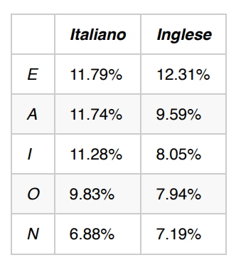

ESERCIZIO 1
Scrivere un programma in Java che legge il file testo1.txt, analizza la frequenza delle 5 lettere in tabella, ne calcola lo scostamento con le percentuali in tabella e stabilisce se il testo è in inglese o in italiano.
ESERCIZIO 2
1) Scrivere un programma in Java che legge il file input.txt e lo cifra nel file output.txt, usando il cifrario di Cesare con chiave chiesta in input all’utente.
2) Scrivere un programma in Java che legge il file output.txt, calcola la lettere con la frequenza maggiore, la confronta con la frequenza della lettera E e scrive quale è la chiave con cui è stato cifrato il testo nel file (calcola la distanza tra la lettera più frequente e la e).
